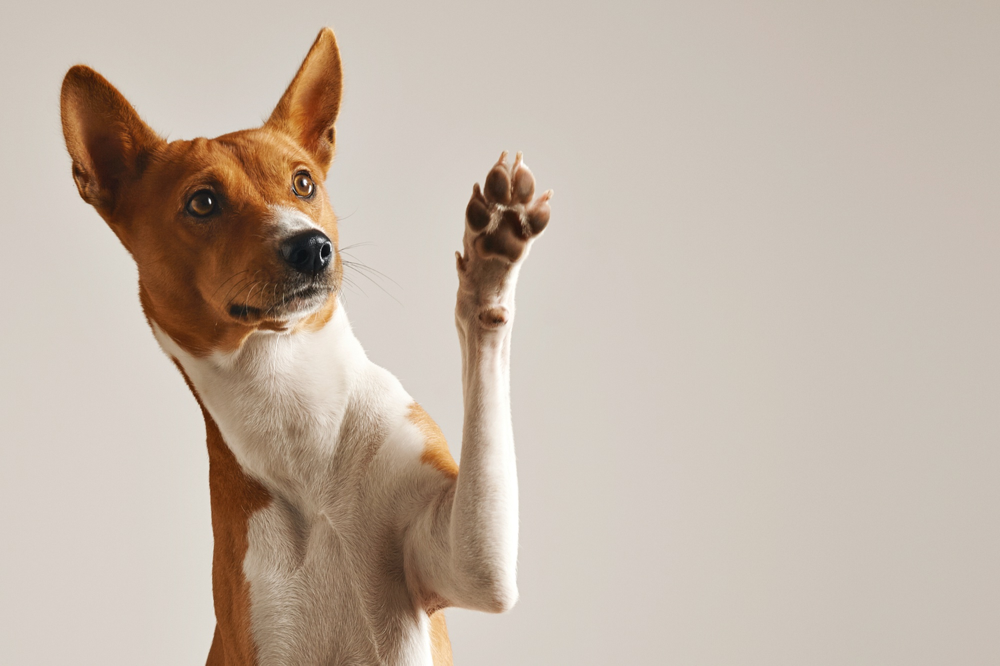
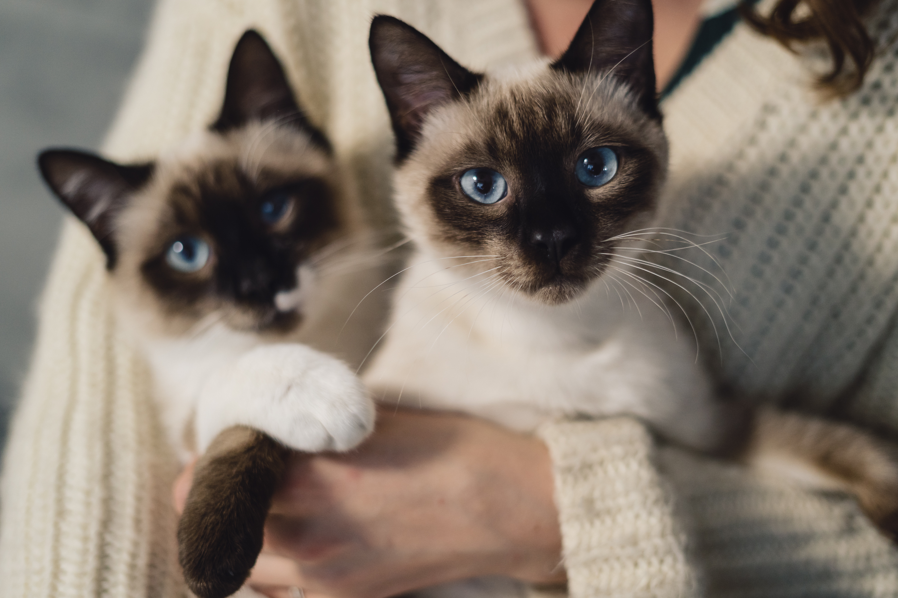

Bem-vindo ao "Acolhendo Patas"!
Nossa jornada começou com uma paixão profunda por animais e um compromisso inabalável de fazer a
diferença nas vidas dos cachorros e gatos que precisam de um lar amoroso. Fundado por amantes de
animais
apaixonados, o "Acolhendo Patas" é um refúgio de esperança e solidariedade para nossos
amigos
peludos.
Tudo começou quando um pequeno grupo de pessoas com corações grandes decidiu unir forças para
combater o
problema do abandono de animais em nossa comunidade. Cientes da situação difícil que muitos
cachorros e
gatos enfrentam, nossa missão foi clara desde o início: oferecer uma segunda chance a esses animais,
proporcionando-lhes um ambiente seguro e amoroso para prosperar.
Ao longo dos anos, construímos parcerias sólidas com resgatistas, abrigos locais e voluntários
dedicados. Juntos, trabalhamos incansavelmente para resgatar, cuidar e encontrar lares permanentes
para
cachorros e gatos em situações vulneráveis. Cada resgate é uma história de esperança e
transformação, e cada adoção é uma celebração de um final feliz.
No "Acolhendo Patas", acreditamos que cada animal merece amor, cuidado e respeito.
Nosso compromisso
com a adoção responsável e o bem-estar dos nossos animais é inabalável. Cada novo membro da nossa equipe
e
cada apoiador que se junta a nós compartilha da mesma paixão e dedicação.
Nossa história é moldada por muitos momentos inesquecíveis, histórias tocantes e corações que se
abriram
para receber esses seres especiais em seus lares. À medida que avançamos, continuamos a escrever
novos
capítulos em nossa jornada, com a esperança de tocar mais vidas e inspirar outros a fazerem a
diferença.
Estamos profundamente gratos a todos que nos apoiaram ao longo dos anos e convidamos você a se
juntar a
nós nesta missão de amor e compaixão. Juntos, podemos transformar vidas e dar a cada pata uma chance
digna e feliz.
Obrigado por fazer parte da história do "Acolhendo Patas."
Com gratidão e amor pelos animais,
Equipe Acolhendo Patas